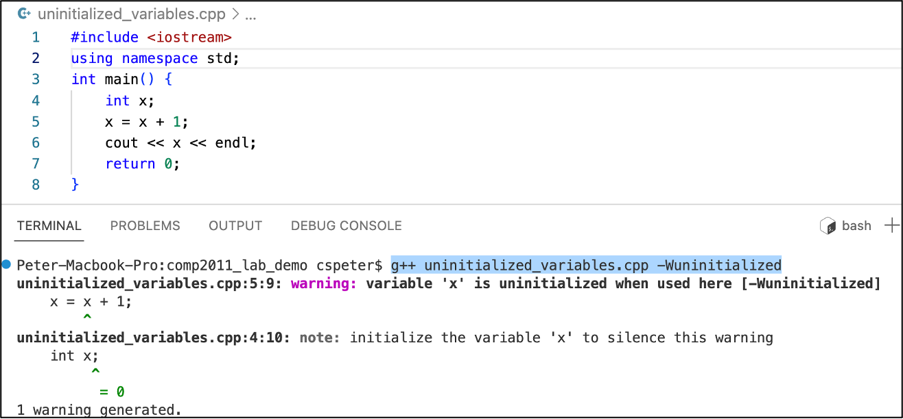
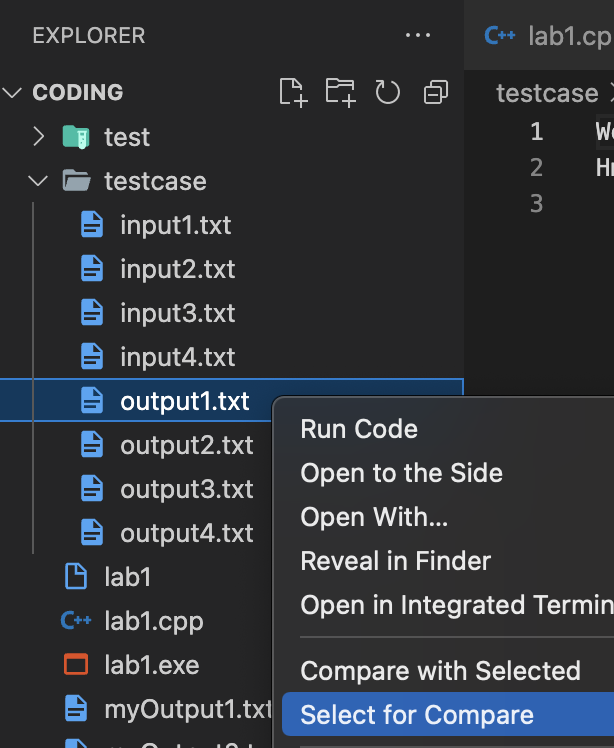
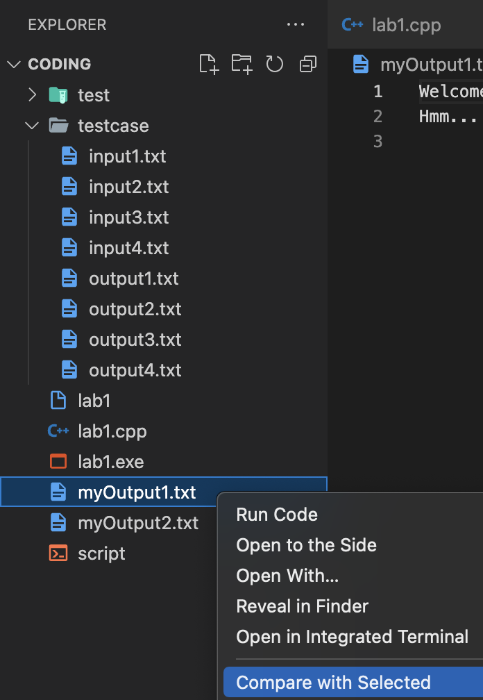
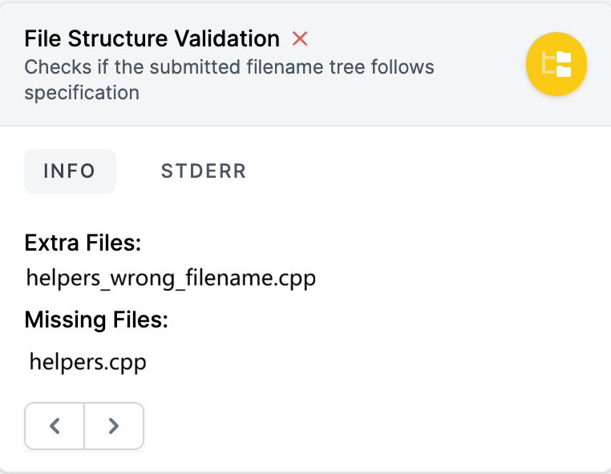

In this project assignment, we would like to implement a text-based maze game using recursion.
The above screenshot serves only as an illustration.
The game is divided into three levels:
Upon completing this project assignment, you will achieve the following learning outcomes:
Applying recursion technique to implement the maze game:
A skeleton code:
pa2_skeleton.zip
is provided.
Sample input and output files are included in the zip file.
cin or cout statements
The input values are marked as Green. Each example below shows one released sample input and its corresponding expected output.
| A sample input | A sample output |
|---|---|
given_testcases/input01.txt
|
given_testcases/output01.txt
|
| A sample input | A sample output |
|---|---|
given_testcases/input02.txt
|
given_testcases/output02.txt
|
| A sample input | A sample output |
|---|---|
given_testcases/input03.txt
|
given_testcases/output03.txt
|
DIRECTIONS in globals.cpp).rows cols, then rows * cols integers.printPathcopyPathRecursivecalculate_num_survivorsshortestPathTryDirectionsshortestPathrescueSurvivorsWithPenaltytryAllDirectionsWithPenaltyrescueSurvivorsMaxtryAllDirectionsMaxTask1: Implement printPath
// TODO: print the path (only the coordinates) recursively
// @param path: a 2D array storing the path coordinates
// @param pathLength: length of the path
// @param index: current index to print (default = 0)
void printPath(int path[][2], int pathLength, int index = 0){
// TODO1: Implement this function
}
Task2: Implement copyPathRecursive
// TODO: Copy path from source Recursively
// @param source: source path
// @param copy: destination path
// @param pathLength: length of the path
// @param index: current index to copy (default = 0)
void copyPathRecursive(int source[][2], int copy[][2], int pathLength, int index = 0){
// TODO2: Implement this function
}
Task3: Implement calculate_num_survivors
// TODO: Calculate total survivors along the path recursively
// @param map: The 2D array storing survivor counts
// @param rows: number of rows
// @param cols: number of columns
// @param path: the path array containing coordinates
// @param pathLength: length of the path
// @param index: current index to process (default = 0)
// @return: total number of survivors along the path
int calculate_num_survivors(int map[][MAX_MAP_SIZE], int rows, int cols, int path[][2], int pathLength, int index = 0){
// TODO3: Implement this function
}
【Level 1: Shortest Path】
Task4: Implement Shortest Path Algorithm
shortestPathTryDirections and
shortestPath for recursive branch traversal without loops.A reliable way to implement Level 1 is to separate the DFS into two parts: one part processes the current cell, and another part recursively tries all 4 directions.
Step-by-step for processing one cell
-1), already visited, or path too long.
visited[r][c] = true, write (r,c) into
currentPath[currentPathLength], then compute newPathLength.
newPathLength with
current best pathLength; if better, copy path using
your recursive path-copy logic.
visited[r][c] = false.
Step-by-step for trying directions recursively
dirIndex >= 4, return false.
(newR,newC), then recurse into the
cell-processing part for this direction.
dirIndex + 1).
foundThis || foundNext.
Important: do not stop at the first found path in Level 1. You must continue exploring all branches to guarantee the shortest path is captured.
// TODO: Recursively try 4 directions for shortestPath
bool shortestPathTryDirections(int map[][MAX_MAP_SIZE], int rows, int cols, int path[][2], int& pathLength,
int targetRow, int targetCol, int r, int c, bool visited[][MAX_MAP_SIZE],
int currentPath[][2], int currentPathLength, int dirIndex){
// TODO4-helper: Implement this function
}
// TODO: Level 1: Shortest path finding using recursion
//
// @param map: The 2D array storing the map information
// @param rows: number of rows
// @param cols: number of columns
// @param path: output path if found
// @param pathLength: output path length
// @param targetRow: target row
// @param targetCol: target column
// @param r: current row
// @param c: current column
// @param visited: visited marks
// @param currentPath: path has been explored
// @param currentPathLength: length of current path
// @return: true if path found, false otherwise
bool shortestPath(int map[][MAX_MAP_SIZE], int rows, int cols, int path[][2], int& pathLength, int targetRow, int targetCol, int r, int c, bool visited[][MAX_MAP_SIZE], int currentPath[][2], int currentPathLength){
// TODO4: Implement this function
}
【Level 2: Advanced DFS with Penalty Tiles】
Task5: Implement rescueSurvivorsWithPenalty
// TODO: Rescue survivors to unlock shelter (with penalty tiles)
//
// Hints:
// - Check boundaries, time, chasms, visited, path length and use them as base cases.
// - Handle positive and negative survivor values (penalty tiles).
// - Mark as visited and add to path.
// - Add current survivors (which may be negative). Also check if at target and enough to unlock.
// - Call tryAllDirectionsWithPenalty to explore moves.
// - Remember to backtrack.
//
// @param map: The 2D array storing survivor counts (positive or negative values)
// @param rows, cols: map dimensions
// @param targetRow, targetCol: shelter location
// @param r, c: current position
// @param visited: visited cells tracker
// @param currentPath: path explored so far
// @param currentPathLength: current path length
// @param timeLeft: remaining time
// @param outPath: output path if found
// @param outPathLength: output path length
// @param currentSurvivors: survivors rescued so far
// @param unlockThreshold: survivors needed to unlock
// @param bestPathLength: length of best path found so far
// @return: true if path found, false otherwise
bool rescueSurvivorsWithPenalty(int map[][MAX_MAP_SIZE], int rows, int cols, int targetRow, int targetCol, int r, int c,
bool visited[][MAX_MAP_SIZE], int currentPath[][2], int currentPathLength,
int timeLeft, int outPath[][2], int& outPathLength,
int currentSurvivors, int unlockThreshold,
int& bestPathLength){
// TODO5: Implement this function
}
Task6: Implement tryAllDirectionsWithPenalty
// TODO: Try all four directions recursively (penalty tiles version)
//
// Hints:
// - Use an array of direction (fixed order for grading: up, down, left, right).
// - Base case: all directions tried.
// - Calculate new position and time cost.
// - Recur into rescueSurvivorsWithPenalty for the new position.
// - Make use of the return value.
//
// @param map: The 2D array storing survivor counts (positive or negative values)
// @param rows, cols: map dimensions
// @param targetRow, targetCol: shelter location
// @param r, c: current position
// @param visited: visited cells tracker
// @param currentPath: path explored so far
// @param currentPathLength: current path length
// @param timeLeft: remaining time
// @param dirIndex: current direction index to try
// @param outPath: output path if found
// @param outPathLength: output path length
// @param currentSurvivors: survivors rescued so far
// @param unlockThreshold: survivors needed to unlock
// @param bestPathLength: length of best path found so far
// @return: true if valid path found, false otherwise
bool tryAllDirectionsWithPenalty(int map[][MAX_MAP_SIZE], int rows, int cols, int targetRow, int targetCol, int r, int c,
bool visited[][MAX_MAP_SIZE], int currentPath[][2], int currentPathLength,
int timeLeft, int dirIndex,
int outPath[][2], int& outPathLength, int currentSurvivors, int unlockThreshold,
int& bestPathLength){
// TODO6: Implement this function
}
【Level 3: DFS Optimization with Maximum Rescue】
Task7: Implement rescueSurvivorsMax
// TODO: Rescue survivors recursively (maximum rescue version)
//
// Hints:
// - Use dynamic time cost based on survivors rescued.
// - Remember to update best path and max survivors when reaching the target.
//
// @param map: The 2D array storing survivor counts
// @param rows, cols: map dimensions
// @param targetRow, targetCol: shelter location
// @param r, c: current position
// @param visited: visited cells tracker
// @param currentPath: path explored so far
// @param currentPathLength: current path length
// @param timeLeft: remaining time
// @param bestPath: best path found so far
// @param bestPathLength: length of best path
// @param maxSurvivors: maximum survivors rescued along best path (reference to update)
// @param currentSurvivors: survivors rescued so far
// @param unlockThreshold: survivors needed to unlock
// @return: maximum survivors that can be rescued
int rescueSurvivorsMax(int map[][MAX_MAP_SIZE], int rows, int cols, int targetRow, int targetCol, int r, int c,
bool visited[][MAX_MAP_SIZE], int currentPath[][2], int currentPathLength,
int timeLeft, int bestPath[][2], int& bestPathLength,
int& maxSurvivors, int currentSurvivors, int unlockThreshold){
// TODO7: Implement this function
}
Task8: Implement tryAllDirectionsMax
// TODO: Try all four directions recursively (maximum rescue version)
//
// Hints:
// - Use direction deltas array.
// - Base case: all directions tried.
// - For each direction, calculate new position and time cost.
// - Recur into rescueSurvivorsMax, then try next direction.
// - Compare the results
// - - Use the const int variable UNREACHABLE to indicate a path cannot satisfy the constraints.
//
// @param map: The 2D array storing survivor counts
// @param rows, cols: map dimensions
// @param targetRow, targetCol: shelter location
// @param r, c: current position
// @param visited: visited cells tracker
// @param currentPath: path explored so far
// @param currentPathLength: current path length
// @param timeLeft: remaining time
// @param bestPath: best path found so far
// @param bestPathLength: length of best path
// @param dirIndex: current direction index to try
// @param maxSurvivors: maximum survivors rescued along best path
// @param currentSurvivors: survivors rescued so far
// @param unlockThreshold: survivors needed to unlock
// @return: maximum survivors that can be rescued
int tryAllDirectionsMax(int map[][MAX_MAP_SIZE], int rows, int cols, int targetRow, int targetCol, int r, int c,
bool visited[][MAX_MAP_SIZE], int currentPath[][2], int currentPathLength,
int timeLeft, int bestPath[][2], int& bestPathLength, int dirIndex,
int& maxSurvivors, int currentSurvivors, int unlockThreshold){
// TODO8: Implement this function
}
Many students forget to initialize the variables before using them. Sometimes, it will cause serious problems. In most of the operating systems (e.g., Linux), variables won't be initialized (i.e., there are garbage values stored if the variables are not initialized and being used.)
ZINC is running in Linux, so variables won't be initialized automatically.
The following method can ask the compiler to check uninitialized variables. For example,
the
following code is stored in a file named uninitialized_variables.cpp, you
can add a
flag -Wuninitialized to check:
g++ uninitialized_variables.cpp -Wuninitialized
The above technique may be useful for your labs and projects. Here is a demo in vscode:

In additon, if you want to see all warning messages, you can use -Wall to check:
g++ uninitialized_variables.cpp -Wall
Similar to labs, you should follow similar steps to run the test cases. You won't see your ZINC grading report before the deadline.
Limitations of the ZINC system:
Please compare your outputs with the desired outputs:
-Wall flag is added to display more debugging information. It helps you identify some hidden problems (e.g., using uninitialized variables).
Please replace the filenames accordingly if you would like to check other output files.


Students may use different operating systems (e.g., Windows/Mac/Linux), so the executable file is prepared in Virtual Barn: testcases.exe
If you want to run the sample executable, you should follow a similar tutorial in PA1
The following released test cases are included in the current skeleton package:
| Input | Output | Map | Category | Description |
|---|---|---|---|---|
| input01.txt | output01.txt | map01.txt | Level 1 | Shortest path to the beacon (basic DFS/backtracking) |
| input02.txt | output02.txt | map02.txt | Level 2 | Penalty tiles + time limit + shortest valid path |
| input03.txt | output03.txt | map03.txt | Level 3 | Dynamic time cost + maximize rescued survivors |
In addition to the given test cases, hidden test cases will cover edge cases across all three levels.
The hidden-case distribution can be adjusted before final grading release.
| Main Area (*) | Number of Given Test Cases |
Number of Hidden Test Cases (Tentative) |
Total Marks in Each Area |
|---|---|---|---|
| Level 1 | 1 | TBA | TBA |
| Level 2 | 1 | TBA | TBA |
| Level 3 | 1 | TBA | TBA |
| Total | 3 | TBA | 100 |
We highly value academic integrity. Please read the Honor Code section on our course webpage to make sure you understand what is considered as plagiarism and what the penalties are. The followings are some of the highlights:
This programming assignment is challenging, so you are highly recommended to start early. If you need clarification on the requirements, please feel free to post on Piazza. However, to avoid cluttering the forum with repeated/trivial questions, please carefully read the given code, the description, the sample output, and the latest FAQ (refresh this page regularly) in this page before you post your questions. In addition, please be reminded that we won't help debug for any student's assignment for the sake of fairness.
You are required to submit your solution to our auto-grading
system: ZINC.
Please read the
ZINC student submission guidelines
if you still don't know how to submit in ZINC.
The filename is , and submit it to ZINC. A strong penalty will be given if your filename is wrong. You don't need to zip the file if you only submit one file to ZINC.
Filename checking is enabled in ZINC. If your filename is wrong, you should see something like this:

Other names do not work
Notes:
Make sure your program can be compiled and be able to execute.
If we cannot even compile your work, it won't be graded. Therefore, for parts that you cannot finish, just put in dummy/empty implementation so that your whole program can be compiled for ZINC to grade the other parts that you have done.
There will be a penalty of -1 point (out of a maximum 100 points) for every
minute you
are late.
In other words, if you are late for more than 100 minutes, you will get 0
marks.
This section will be updated after the release
As the assignment is a major course assessment, to be fair, we should not
finish the
tasks for you.
We might provide you some hints, but we won't debug for you.
Use input01, input02, and input03 in
given_testcases/. These correspond to Levels 1, 2, and 3 respectively.
Make sure the map files are in your working directory and the names match exactly
(e.g., map01.txt, map02.txt, map03.txt).
Path length is the number of coordinates in the path array, including both start and destination. (So moves = path length - 1.)
In Level 1 and Level 2, output the shortest valid path. Branch exploration order must follow
up, down, left, right for deterministic behavior.
No. For this PA, required functions and any extra helper functions for those tasks should use recursion only.